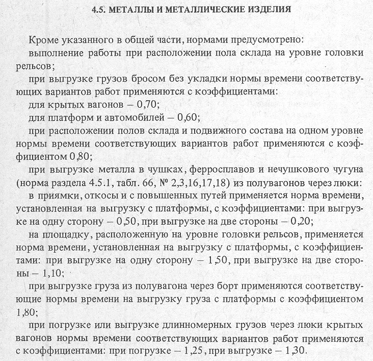

4.5.1. Погрузка-выгрузка металлов и металлических изделий на железнодорожный подвижной состав и на автотранспорт
4.5.2. Выгрузка металла, металлолома и отходов металлообработки в бункера и на эстакадах с решетками
4.5.3. Выгрузка металла, металлолома и отходов металлообработки в траншеи, котлованы и бункера без решеток